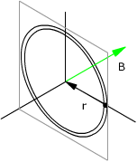
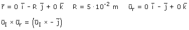
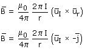
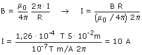
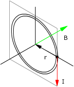
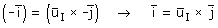

b)
No se conoce el sentido en que circula la corriente por la espira, por tanto no se sabe uI



Se sabe que el módulo del campo vale 1.26·10-4 T:


Se sabe que el vector unitario en la dirección del campo es -i

Si el producto vectorial de uI x j es i, dicho vector uI tendrá que ser: -k
La corriente circula por la espira en el sentido de las agujas del reloj (Bastaba con aplicar la regla del sacacorchos para verlo)